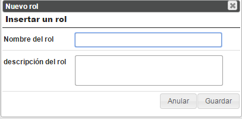
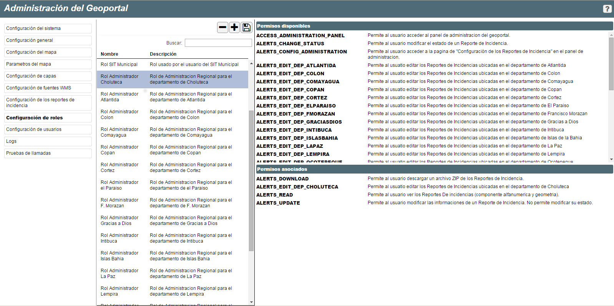

Permiten la administración de los roles, subdivisión en grupos de usuarios que pueden utilizar las mismas funcionalidades específicas.
Las herramientas de esta sección permiten: Crear o Eliminar roles.
Por cada rol, es posible asociar diferentes permisos para utilizar funciones disponibles como: Validar denuncias, Administrar usuarios, Administrar roles, etc.
Una ventana permite al usuario insertar un nuevo rol.

Añadir un nuevo rol

Ventana de insercion de un nuevo rol
Permite eliminar un rol.

Eliminar un rol
La asociación rol – permisos se hace seleccionando un rol en la parte izquierda de la página y arrastrando los permisos desde la lista de los permisos disponibles a la de los permisos asociados.
Para remover permisos desde un rol, se hace la operación opuesta, o sea se arrastran los permisos desde la lista de los asociados a la lista de los disponibles.
